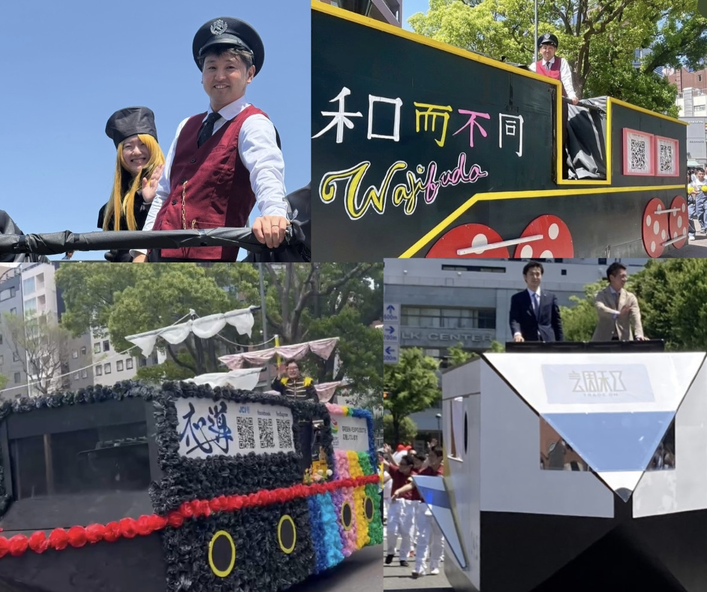
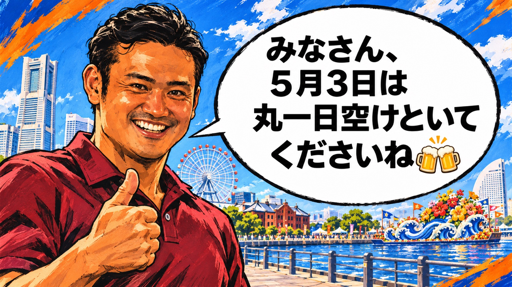

そもそも「ハマパレ」って何？🎉
5月3日に横浜市で毎年開催されるパレードに、横浜青年会議所（横浜JC）の新入会員が参加する事業です！
会員自らフロート（装飾した車）を制作し、ダンスを踊りながら横浜の街をパレードします💃

2027年度は、私たち会員交流委員会が本事業を担当！
リーダーシップ推進特別委員会や新入会員と連携しながら、フロート制作・ダンス練習・本番までを進めます。
私たちとしても成果を出しながら、より多くの新入会員が楽しんで参加できるハマパレを目指しています！
ぜひ皆さんの本音を教えてください！✨
